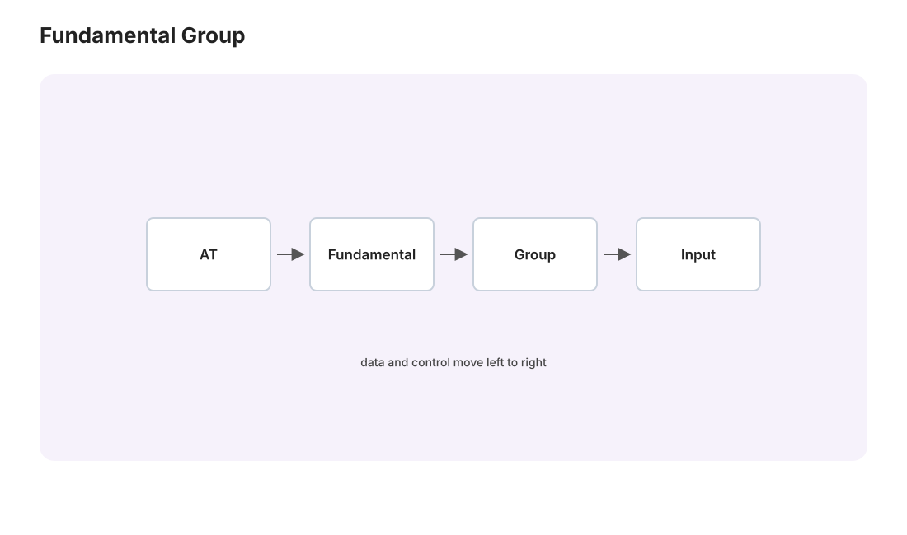

本页目录
代数拓扑 I · 同伦与基本群
对标：Hatcher AT §1.1–1.2 ｜ 前置：本科拓扑 I–II、抽代 I 代数拓扑的纲领：给空间配代数不变量，用代数的可计算性判空间的不同（拓扑 II 结尾的预告正式开演）。第一个不变量是基本群——"绕洞方式"的群；本页的技术高峰是 \(\pi_1(S^1) \cong \mathbb{Z}\)：整个学科的第一块非平凡砖。

学习层：把“绕几圈”抬到实线
1. 先固定问题：环路、基点与覆盖
把圆周写成
这里的 \(1\) 是 \(S^1\) 的基点，\(0\) 是它选定的提升起点。\(p(x+k)=p(x)\)（\(k\) 为整数），所以实线像一架无限楼梯：每跨过一层，圆周上的投影又回到同一个基点。
对于以 \(1\) 为起点的路径 \(γ:[0,1]→S^1\)，一旦规定 \(ℓ(0)=0\)，覆盖空间的路径提升定理给出唯一的提升 \(ℓ\) 使
若 \(γ\) 还是以 \(1\) 为终点的回路，那么 \(ℓ(1)∈p^{-1}(1)=ℤ\)。这个整数就是绕数；若终点不是 \(1\)，则提升终点一般只是某个实数，不能随意叫作绕数。
2. 预测：形状可以回摆，端点为什么不动？
本实验固定 \(a=1\)，使用一族提升
其中 \(n\) 是离散的绕数预设，\(λ\) 只把路径在实线上来回拉扯。先猜：把 \(λ\) 从 \(0\) 拉大，右图的实线会如何改变？到 \(t=1\) 时，终点会不会离开整数？再拖动进度 \(t\)，比较实线上的点 \(ℓ(t)\) 与左图的投影 \(p(ℓ(t))\)。
两端的正弦项同时为零，因此
所以 \(λ\) 可以让中间形状大变，却不能改变端点账本：这是“固定端点同伦保持提升终点”的可视化版本。
3. 实验读法：两张图与一个数值账本
左图显示 \(p∘ℓ\) 在圆周上的投影，右图显示实线中的提升 \(ℓ(t)\)。移动 \(t\) 时，两个当前点同步移动；右图的水平整数线提示纤维 \(p^{-1}(1)=ℤ\)，而终点标记始终在 \(n\) 层。数值账本同时列出当前 \(t\)、当前提升值、投影坐标、起点 \(ℓ(0)=0\) 与终点 \(ℓ(1)=n\)。
若只改变 \(λ\)，投影路径可能在圆周上前进又后退，但每个 \(λ\) 给出同一对固定基点的回路同伦类；若改变离散的 \(n\)，终点层数改变，因而得到不同的基本群元素。这个“终点层数”正是
的计算影像。
4. 术语边界：哪些话可以说，哪些话不能偷换
- 基本群元素是固定基点的回路同伦类：\(γ(0)=γ(1)=1\)，同伦 \(H(s,t)\) 也必须在两端始终固定为 \(1\)。它不是“任意一条路”的集合，也不是自由同伦类。
- 给定提升起点后，路径提升是唯一的；在本实验中选择 \(ℓ(0)=0\) 才能把终点读成一个确定的整数。
- 只有投影是回路时，提升终点才保证落在整数纤维 \(p^{-1}(1)=ℤ\)。固定端点的同伦会保持这个提升终点。
- 一般空间的“洞数”不是一个简单整数：\(π_1\) 可能非交换，例如八字形的自由群 \(F_2\)。自由同伦允许基点移动；在道路连通情形，它更接近于基本群元素的共轭类，不能和基点同伦混为一谈。
无 JavaScript 时的静态读法：取 \(n=1,λ=0\)，提升为 \(ℓ(t)=t\)，从 \(0\) 到 \(1\)；一般地 \(ℓ(0)=0\)、\(ℓ(1)=n\)，而 \(p(0)=p(n)=1\)。脚本加载后可切换负、零、正的离散绕数，调节固定端点的回摆与移动进度，并对照圆周投影和实线提升。
5. 迁移问题：把“终点账本”带到别处
设 \(γ_0,γ_1\) 都是以 \(1\) 为起点和终点的回路，并且通过固定端点的同伦相连。给它们的提升都选起点 \(0\)：你能否用同伦提升说明两条提升的终点必须相同？反过来，若两条提升终点分别为 \(0\) 与 \(1\)，为什么这足以说明原回路不在 \(π_1(S^1,1)\) 中同伦？最后思考：把圆周换成环面或八字形时，什么仍可由提升记录，什么不再能用一个整数概括？
1. 同伦：连续变形的等价
定义 映射同伦 \(f \simeq g\)：存在连续 \(H: X\times[0,1] \to Y\)，\(H_0 = f, H_1 = g\)（"电影"连接两映射）。道路同伦：端点固定的同伦。同伦等价的空间（\(fg \simeq \mathrm{id}\)，\(gf \simeq \mathrm{id}\)）：比同胚更粗的"相同"——圆环带 \(\simeq\) 圆（压扁）、\(\mathbb{R}^n \simeq\) 点（缩回）——代数拓扑的不变量都是同伦不变量：看"形变骨架"不看"皮肉尺寸"。
2. 基本群
定义 \(\pi_1(X, x_0)\)：以基点 \(x_0\) 为起点和终点的回路，在固定基点的道路同伦下的等价类，乘法 = 接续走。自由同伦允许基点移动，不能直接替代这里的等价关系。 群公理验证【骨架】：结合律/单位（常值路）/逆（倒放）都"差一个重参数化的同伦"——三张标准同伦图（Hatcher §1.1 的图）；道路连通时基点选取只差同构（沿连接路共轭）。\(\blacksquare\)
函子性（本学科的方法论核心）：连续映射 \(f: X \to Y\) 诱导群同态 \(f_*: \pi_1(X,x_0) \to \pi_1(Y,f(x_0))\)，且 \((fg)_* = f_*g_*\)、恒等映射诱导恒等——"空间与映射"被系统翻译成"群与同态"；同伦等价诱导同构。范畴论气质的第一次正式出场：不变量之所以能判非同胚，正因翻译保持结构。
3. \(\pi_1(S^1) \cong \mathbb{Z}\)（第一块非平凡砖）
定理 圆周的基本群是 \(\mathbb{Z}\)，由"绕一圈"生成；同构由卷绕数给出。 【证明骨架（提升论证，结构完整）】 覆盖映射 \(p: \mathbb{R} \to S^1\)，\(t \mapsto e^{2\pi it}\)（螺旋楼梯投影到圆）。 ① 道路提升引理：\(S^1\) 中始于 \(1\) 的道路唯一提升为 \(\mathbb{R}\) 中始于 \(0\) 的道路（紧致性切小段、每段落在均匀覆盖邻域里逐段抬升——拓扑 II 紧致性的标准用法）； ② 同伦提升引理：固定端点的道路同伦也唯一提升（同法对方块紧致性）； ③ 对以 \(1\) 为终点的回路定义 \(\deg(\gamma) = \tilde\gamma(1)\)（此时提升终点必为整数——楼梯爬了几层）。②保证同伦类不变；满射（爬 \(n\) 层的螺旋线）与单射（终点同层 ⇒ 提升同伦 ⇒ 原路同伦）给同构。\(\blacksquare\)
立收的红利（一颗定理三枚果）：
- Brouwer 不动点定理（二维）【证明】：圆盘自映射无不动点 ⇒ 可造收缩 \(D^2 \to S^1\)（沿 \(f(x)\) 到 \(x\) 的射线打到边界）⇒ 函子性给 \(\mathbb{Z} = \pi_1(S^1)\) 是 \(\pi_1(D^2) = 0\) 的直和项——矛盾。\(\blacksquare\)（博弈论 I 欠的 Kakutani/Brouwer 至此有拓扑证明——Nash 均衡存在性的地基正式落地。）
- 代数基本定理【骨架】：无根多项式给出 \(S^1\) 上卷绕数 \(n\) 与 \(0\) 的矛盾同伦（大圆上 \(p(z) \approx z^n\) 绕 \(n\) 圈、小圆缩到常值）——复变 II 之外的第二条证明路线。
- Borsuk–Ulam（二维）【引用】：球面到平面的连续映射必有对径点同像——"地球上总有一对对径点温度气压俱同"。
4. 计算工具箱（预告 at-02）
\(\pi_1(S^n) = 0\ (n\geq2)\)（回路可推离一点再缩——高维球面单连通）；乘积 \(\pi_1(X\times Y) = \pi_1(X)\times\pi_1(Y)\)【一行】⇒ 环面 \(\pi_1(T^2) = \mathbb{Z}^2\)（两种绕法交换）；8 字形（两圆一点粘） \(\pi_1 = F_2\)（自由群——两种绕法不交换：\(aba^{-1}b^{-1} \neq e\)，非交换性的拓扑出生地；证明需 van Kampen，下一页主菜）。
5. 练习与要点
例 1（卷绕数亲算） \(\gamma(t) = e^{2\pi i\cdot 3t}\)：提升 \(\tilde\gamma(t) = 3t\)、\(\deg = 3\)——"绕三圈"的正式户口；复变 III 留数定理的绕数与此同源（辐角原理是两线的桥【引用】）。
例 2（不变量判非同胚） \(\mathbb{R}^2\) 与 \(\mathbb{R}^2\setminus\{0\}\)：后者 \(\pi_1 = \mathbb{Z}\)（同伦等价于 \(S^1\)）前者平凡——"挖一点"被群测出来（拓扑 II 连通性数分叉判不了的，基本群接管：不变量的分辨率升级）。
例 3（mfld-02 对账） \(H^1_{dR}(\mathbb{R}^2\setminus\{0\}) \neq 0\)（角度形式）与 \(\pi_1 = \mathbb{Z}\) 测的是同一个洞——分析的探测器与代数的探测器在最小例子上对上号（de Rham 定理的第一次显灵）。\(\blacksquare\)
下一页：覆盖空间的全理论（基本群的"伽罗瓦理论"）与 van Kampen 定理（分块计算 \(\pi_1\) 的引擎）。